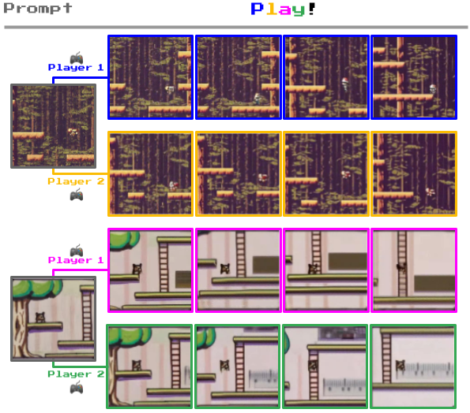
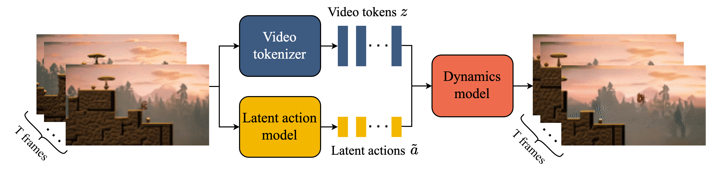
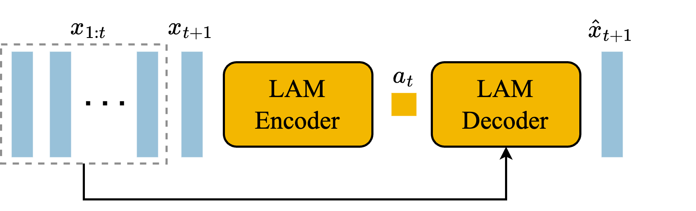
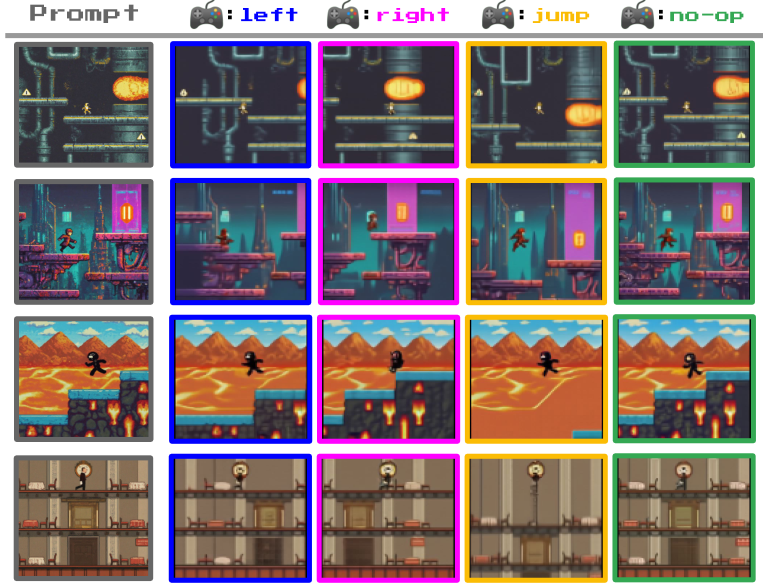

Genie: Generative Interactive Environments
原论文摘要 · English Abstract
We introduce Genie, the first generative interactive environment trained in an unsupervised manner from unlabelled Internet videos. The model can be prompted to generate an endless variety of action-controllable virtual worlds described through text, synthetic images, photographs, and even sketches. At 11B parameters, Genie can be considered a foundation world model. It is comprised of a spatiotemporal video tokenizer, an autoregressive dynamics model, and a simple and scalable latent action model. Genie enables users to act in the generated environments on a frame-by-frame basis despite training without any ground-truth action labels or other domain-specific requirements typically found in the world model literature. Further the resulting learned latent action space facilitates training agents to imitate behaviors from unseen videos, opening the path for training generalist agents of the future.
视频分词器把帧压成离散 token
ST-ViViT 把 $T$ 帧视频压成离散 token $\bm{z}$，码本 1024 个码、每个码 32 维
LAM 从相邻帧反推潜动作
编码器看历史帧 $\bm{x}_{1:t}$ 与下一帧 $x_{t+1}$，用 8 个码之一概括帧间变化
动力学模型逐帧预测未来
MaskGIT 解码器以 token $\bm{z}$ 与潜动作 $\tilde{\bm{a}}$ 为条件预测下一帧 token
用户选动作逐帧驱动生成
提示帧编码为 $z_1$ 后，玩家每选一个 $a_t$，模型就生成下一帧 $\hat{x}_{t+1}$
同一提示图分叉出不同玩法
换动作序列，同一张提示图能玩出左移、右移、跳跃与静止的不同轨迹

问题与动机
在 Genie 之前，生成式 AI 与世界模型之间隔着一道鸿沟：视频生成模型能画出漂亮的视频，却只能在视频级别被提示、不能逐帧互动；经典世界模型（如 World Models、Dreamer、PlaNet）虽然能逐帧接受动作并预测下一帧，却要求训练数据自带真实动作标签，这意味着模型只能在能采集动作的环境里学习，无法利用互联网上浩如烟海的无标注视频。Genie 要问的正是：能不能只看视频，就学会一个可以“玩”的世界？
这个问题的现实约束很强。互联网视频没有动作标注、没有统一的游戏规则、画风与视角千差万别，而且同一段画面变化可能来自角色动作、镜头移动、场景切换或随机事件。直接把视频当作无条件生成任务来训，模型只会学会“接着画”，学不会“听指挥”。因此关键不在于把视频生成做得更清晰，而在于从视频内部反推出一个能解释帧间变化的控制变量，并让这个变量在推理时可以由人接管。
论文把这个野心表述为“生成式交互环境”：用一张图（或一段文字生成的图、一张手绘草图、一张照片）作为提示，模型先生成一个世界，然后用户每按一次“键”，世界就往前演化一帧。11B 参数的规模、超过 20 万小时的原始互联网游戏视频、以及最终过滤出的 3 万小时平台跳跃类（Platformers）视频，都是为这个目标服务的——规模不是装饰，而是让潜动作在不同游戏、不同画风之间保持一致语义的前提。
- 视频模型只能视频级提示、不能逐帧互动；经典世界模型需要真实动作标签，无法利用互联网视频。
- Genie 的目标是“生成式交互环境”：一张图作提示，之后每步由用户动作驱动。
- 训练数据来自互联网 2D 平台跳跃游戏视频，原始超 20 万小时，过滤后约 3 万小时、680 万条 16 秒片段。
核心思想
Genie 的核心思想可以压缩成一句话：把“动作”本身也当作要从视频里学出来的隐变量。模型不假设视频自带动作，而是设一个离散的潜动作码本，码本大小 $|A|=8$，即只有 8 个可能的潜动作；编码器看完过去帧 $\bm{x}_{1:t}$ 再看到下一帧 $x_{t+1}$，必须用这 8 个码之一概括“刚才发生了什么变化”，解码器则只能凭历史帧加上这个潜动作去重建下一帧 $\hat{x}_{t+1}$。信息瓶颈逼着潜动作只编码最有意义的帧间变化，而不是把下一帧的全部像素都抄过去。
这个设计有两个精妙之处。第一，潜动作是离散的、小词汇量的：8 个码恰好对应人类可玩的按钮数量级，既避免了连续隐变量坍缩成“把下一帧直接编码进去”的作弊通道，也让推理时的人类玩家可以像学新手柄一样逐个试出每个码的含义——论文发现，同一个潜动作在不同提示图上语义保持一致，例如在平台跳跃类视频里稳定对应左移、右移、跳跃与静止。第二，潜动作模型（LAM）的解码器只是训练信号的来源，推理时整个 LAM 除码本外都会被丢弃，换成用户直接输入的离散动作 $a_t$；也就是说，训练时学“如何从视频反推动作”，推理时用“人给动作”驱动世界，两者在码本处完成交接。
更深一层看，Genie 把世界模型重新定义为三件套的组合：视频分词器把像素压成离散 token $\bm{z}$，潜动作模型把帧间变化压成离散动作 $\tilde{\bm{a}}$，动力学模型则在 token 与动作的联合序列上做自回归预测。三者都建立在同一种时空 Transformer 之上，共享“空间注意力看一帧之内、时间注意力看同一位置跨帧”的归纳偏置，这让 11B 参数的扩展成为可能，也让“看视频学世界”第一次有了基础模型的形态。
- 潜动作是离散隐变量：码本大小 $|A|=8$，逼模型只编码最有意义的帧间变化。
- LAM 的解码器只提供训练信号，推理时除码本外整个 LAM 被丢弃、由用户动作接管。
- 三件套分工：分词器压像素、LAM 压动作、动力学模型在 token 与动作序列上预测未来。
模型结构与关键机制
三个组件都以 ST-Transformer（时空 Transformer）为骨架。每个 ST 模块包含一层空间注意力、一层时间注意力和一层前馈层：空间层只在同一时刻的 $H \times W$ 个 token 内做注意力，时间层只对同一空间位置跨 $T$ 个时刻的 token 做因果注意力，并且每个模块只在空间与时间注意力之后共用一个前馈层，省掉了空间层之后的前馈层以便把算力让给更关键的部分。这样一来，主导计算量的空间注意力随帧数线性增长而非平方增长，使长视频建模在算力上可行。
视频分词器（ST-ViViT）是一个 VQ-VAE：输入 $T$ 帧视频 $\bm{x}_{1:T}$，其中每帧 $x_t$ 是高 $H$、宽 $W$、通道数 $C$ 的图像，输出每帧的离散 token $\bm{z}_{1:T}$，这里 $\bm{z}_{1:T}$ 中的每个 $z_t$ 都是码本中的离散编码，码本含 1024 个码、每个码的嵌入维度为 32、图像块大小为 4。公式可写作 $\bm{x}_{1:T} \in \mathbb{R}^{T \times H \times W \times C}$ 被编码为 $\bm{z}_{1:T}$，其中 $\bm{x}_{1:T}$ 是原始视频，$T$ 是帧数，$H$、$W$、$C$ 分别是帧高、帧宽与通道数，$\bm{z}_{1:T}$ 是离散 token 序列。与只做空间压缩的前人不同，ST-ViViT 的编码器与解码器都用 ST-Transformer 建模时间动态，且因果结构使每个 $z_t$ 只包含截至 $t$ 的历史信息，这对自回归预测至关重要。分词器共 2 亿参数。
潜动作模型（LAM）同样是 VQ-VAE 结构，但输入是像素而非 token：编码器接收历史帧 $\bm{x}_{1:t}$ 与下一帧 $x_{t+1}$，输出连续潜动作 $\tilde{\bm{a}}_{1:t}$，再经码本量化为离散动作；解码器以历史帧与潜动作为条件重建下一帧 $\hat{x}_{t+1}$。这里 $\bm{x}_{1:t}$ 是截至 $t$ 的历史帧，$x_{t+1}$ 是待解释的下一帧，$\tilde{\bm{a}}_{1:t}$ 是未量化的连续潜动作，$\hat{x}_{t+1}$ 是重建的下一帧预测。LAM 共 3 亿参数，图像块大小为 16，码本含 8 个码、嵌入维度 32。关键选择是让 LAM 直接吃像素而不是吃分词后的 token：消融实验表明，token 输入会丢失部分运动信息，导致可控性下降。
动力学模型是一个解码器式的 MaskGIT Transformer：在时刻 $t$，它接收过去的视频 token $\bm{z}_{1:t-1}$ 与经 stopgrad 处理的潜动作 $\tilde{\bm{a}}_{1:t-1}$，预测下一帧的 token $\hat{z}_t$，其中 $\bm{z}_{1:t-1}$ 是历史 token，$\tilde{\bm{a}}_{1:t-1}$ 是对应的潜动作，$\hat{z}_t$ 是预测的下一帧 token，stopgrad 表示潜动作的梯度在此处截断、不回传进 LAM。训练时用交叉熵损失比较预测 token $\hat{\bm{z}}_{2:T}$ 与真实 token $\bm{z}_{2:T}$，并按伯努利分布随机掩码输入 token，掩码率在 $0.5$ 到 $1$ 之间均匀采样。另一个关键细节是动作以加性嵌入（additive embedding）的方式加入 token 表示，而非简单拼接到帧上，论文发现这能显著提升可控性。最终的动力学模型为 10.1B 参数，加上分词器与 LAM 后总计约 10.7B 参数，论文摘要按约数称之为 11B。
- ST-Transformer：空间注意力看帧内、时间注意力看跨帧因果历史，计算量随帧数线性增长。
- 视频分词器 ST-ViViT：VQ-VAE，1024 个码、块大小 4，输出因果的离散 token $\bm{z}_{1:T}$。
- LAM：VQ-VAE，8 个码、块大小 16，直接吃像素，解码器只为训练提供信号。
- 动力学模型：MaskGIT 解码器，预测 $\hat{z}_t$，动作用加性嵌入注入，训练用交叉熵加随机掩码。


训练与推理流程
训练分两个阶段。第一阶段先单独训练视频分词器，优化标准的 VQ-VAE 目标，训练 30 万步；第二阶段联合训练 LAM 与动力学模型：LAM 直接从像素学习潜动作，动力学模型在分词器输出的 token 上学习预测。序列长度固定为 16 帧、帧率 10FPS，动力学模型训练使用 bfloat16 与 QK 归一化以稳定大模型训练。最终模型用 256 块 TPUv5p、批量 512、训练 12.5 万步、总计 942B 个 token，动力学模型的学习率从 $3\times 10^{-5}$ 余弦衰减到 $3\times 10^{-6}$。
推理是一条干净的“提示—动作—生成”循环：玩家先给一张初始帧 $x_1$（可以是模型生成的图、手绘草图或真实照片），分词器编码器把它变成 token $z_1$，其中 $x_1$ 是提示图像，$z_1$ 是它的离散 token 表示；玩家再选一个整数动作 $a_1$，取值在 $[0, |A|)$ 内，即 0 到 7 之间的整数，查码本得到对应的连续嵌入 $\tilde{a}_1$；动力学模型以 $z_1$ 与 $\tilde{a}_1$ 为条件预测下一帧 token $z_2$，分词器解码器再把 token 解回像素帧 $\hat{x}_2$。这里 $a_1$ 是用户选择的离散潜动作，$\tilde{a}_1$ 是它在码本中的嵌入向量，$z_2$ 与 $\hat{x}_2$ 分别是预测的下一帧 token 与像素帧。重复这一过程即可逐帧“玩”下去，每帧采样使用 25 步 MaskGIT 步骤、温度为 2 的随机采样。
这套流程还支持两种有用的变体：一是把真实视频的起始帧与 LAM 反推出的动作序列喂给模型，可以近似重建原视频；二是换掉动作序列，就能从同一张提示图出发生成全新的轨迹。更重要的是，LAM 可以被冻结后迁移：对一段没有动作标注的专家视频，用 LAM 标出每步的潜动作 $a_t$，再训练策略 $\pi(a_t \mid x_t)$ 预测专家在观测 $x_t$ 下会采取哪个潜动作，其中 $\pi(a_t \mid x_t)$ 是以观测 $x_t$ 为条件、输出潜动作 $a_t$ 的概率的策略，$x_t$ 是当前观测帧；推理时再用少量带真实动作标签的专家数据建立潜动作到真实动作 $u_t$ 的映射字典 $D$，按 $u_t \sim D[a_t]$ 把策略输出的潜动作翻译成环境能执行的真实动作，其中 $u_t$ 是环境的真实动作，$D[a_t]$ 是潜动作 $a_t$ 对应的真实动作候选集合。
- 两阶段训练：先训分词器 30 万步，再联合训练 LAM 与动力学模型。
- 推理循环：提示帧 $x_1$ 编码为 $z_1$，用户选 $a_1$，动力学模型预测 $z_2$，解码回 $\hat{x}_2$，逐帧重复。
- 每帧生成用 25 步 MaskGIT 采样、温度为 2；序列长度 16 帧、帧率 10FPS。
- LAM 可冻结迁移：给无动作专家视频打潜动作标签，训练策略 $\pi(a_t \mid x_t)$，再用小量真实动作数据建立映射 $D$。
实验与结果
扩展性实验是论文最扎实的部分之一。动力学模型从 40M 扩展到 2.7B 参数，每增大一级，最终训练损失都一致下降；批量从 128（190 万 token）扩到 256（380 万 token）再到 448（660 万 token），2.3B 模型的最终损失同样单调改善。这一“规模越大越好”的规律直接支撑了最终 10.1B 动力学模型的决策，说明 Genie 的架构没有在中途遇到扩展瓶颈。
可控性用论文自创的 $\Delta_t\text{PSNR}$ 度量，其定义为用真实动作推断出的潜动作生成的帧与用随机潜动作生成的帧，分别与真实帧 $x_t$ 的峰值信噪比之差，写成独立公式为
$$\Delta_t\text{PSNR} = \text{PSNR}(x_t, \hat{x}_t) - \text{PSNR}(x_t, \hat{x}_t')$$
其中 $x_t$ 是时刻 $t$ 的真实帧，$\hat{x}_t$ 是以从真实视频反推的潜动作生成的帧，$\hat{x}_t'$ 是以随机采样的潜动作生成的同一帧，$\text{PSNR}$ 是峰值信噪比，$t$ 在全部实验中取 4。$\Delta_t\text{PSNR}$ 越大，说明换掉动作对生成结果的影响越大，即动作的控制力越强。这个度量的设计本身就值得注意：它不直接奖励画质，而是奖励“动作是否真的在起作用”，从而把“可玩性”变成了一个可测量的量。
定性结果上，Genie 展现了三类涌现能力：对分布外提示的泛化（文本生成图、手绘草图、真实照片都能被“玩”起来，且角色会按潜动作移动）；对物理与场景结构的隐式理解（同一动作连续作用 10 步，能模拟薯片袋等可变形物体的形变；能模拟平台游戏中前景移动快于背景的视差）；以及跨域的动作一致性（在机器人视频上训练的 2.5B 模型测试集 FVD 为 82.7，同一潜动作在不同起始帧下稳定对应“上、下、左”等语义）。在 CoinRun 行为克隆实验中，LAM 策略仅用 200 个带真实动作标签的专家样本做映射，就达到了与能直接看到专家真实动作的 oracle 行为克隆相同的通关水平，而随机智能体则远低于两者，这为“互联网视频可转化为智能体训练数据”提供了直接证据。
- 规模实验：动力学模型 40M 至 2.7B 参数，损失随规模单调下降；批量 128 至 448 同样单调改善。
- 可控性度量 $\Delta_t\text{PSNR}$：比较真实潜动作与随机潜动作生成帧和真实帧的 PSNR 之差，$t=4$。
- 机器人域 2.5B 模型测试集 FVD 为 82.7；同一潜动作跨起始帧语义一致。
- CoinRun 上 LAM 策略仅用 200 个真实动作标签样本即追平 oracle 行为克隆。
实验结果 · 数据
潜动作模型输入消融：FVD（越低越好）
| 项目 | Platformers | Robotics |
|---|---|---|
| Token 输入 | 38.8 | 257.8 |
| 像素输入（Genie） | 40.1 | 136.4 |
Token 输入
像素输入（Genie）
潜动作模型输入消融：可控性 $\Delta_t\text{PSNR}$（越高越好，$t=4$）
| 项目 | Platformers | Robotics |
|---|---|---|
| Token 输入 | 1.33 | 1.65 |
| 像素输入（Genie） | 1.91 | 2.07 |
Token 输入
像素输入（Genie）
分词器结构消融：FVD（越低越好）
| 项目 | 数值 |
|---|---|
| ViT（仅空间） | 114.5 FVD |
| C-ViViT | 272.7 FVD |
| ST-ViViT（Genie） | 81.4 FVD |
数字首先说明了一件事：画质与控制力是可以分叉的。表 2 里 token 输入在 Platformers 上 FVD 为 38.8、略优于像素输入的 40.1，却在 $\Delta_t\text{PSNR}$ 上以 1.33 对 1.91 明显落败；在 Robotics 上像素输入更是 FVD 与 $\Delta_t\text{PSNR}$ 双双胜出（136.4 对 257.8，2.07 对 1.65）。只看 FVD 会误判为两种输入差不多，但加上可控性指标后，像素输入的优势是系统性的——这正是 Genie 让 LAM 直接吃像素的依据。
分词器消融同样干净：ST-ViViT 的 FVD 为 81.4，明显优于仅空间 ViT 的 114.5，更大幅优于 C-ViViT 的 272.7，同时 $\Delta_t\text{PSNR}$ 也以 1.66 领先（ViT 为 1.39，C-ViViT 为 1.37）。C-ViViT 用全时空注意力、显存高达 1.6GB，却因过拟合与强正则需求而表现最差，说明“注意力越全越好”在视频建模里并不成立；ST-Transformer 用分离的空间与时间注意力换来了线性复杂度和更好的泛化。
需要警惕的水分有三处：其一，全部消融用的都是 1B 至 2.5B 的中小模型，11B 主模型的 FVD 与 $\Delta_t\text{PSNR}$ 在正文里并未以表格形式完整报告，规模实验只给了训练损失曲线；其二，数据集 curation 的收益（FVD 从 61.4 降到 54.8）是在 580M 小模型上测的，能否外推到 11B 并不确定；其三，CoinRun 追平 oracle 的结论很亮眼，但只报告了“200 个样本即追平”的定性结果，没有给出具体的通关率数值与置信区间，图 14 的曲线本身未附数值表，因此这部分应视为存在性证明而非精确的性能声明。

局限与争议
论文自己承认的局限有三条，而且都相当实在。第一，记忆只有 16 帧：模型只能记住最近 16 帧的历史，超过这个窗口后世界的一致性会退化，长时间游玩会出现场景漂移与“幻觉出不真实的未来”。第二，速度只有约 1FPS：每帧要做 25 步 MaskGIT 采样，离实时交互还差一个数量级，论文明确说需要未来的效率突破。第三，模型没有放出权重、训练数据与数据样本，复现 11B 主模型需要 256 块 TPUv5p 的算力，普通研究者只能复现附录 F 中单卡可训的 CoinRun 小模型，这在可复现性上留下了缺口。
方法层面也有值得争论的取舍。8 个潜动作的码本是为了人类可玩性而设的人为上限，动作语义完全由数据驱动、没有先验保证：同一个码在平台跳跃类里是“跳”，换到机器人域可能对应完全不同的运动，跨域迁移时必须重新建立潜动作到真实动作的映射字典 $D$，而不能直接复用。$\Delta_t\text{PSNR}$ 虽然巧妙，但它只在 $t=4$ 的短 horizon 上度量控制力，不能反映长程动作的累积效应；FVD 同样是视频级画质指标，对“世界是否自洽、物体是否守恒”并不敏感。
还有一个更根本的争议：Genie 学到的究竟是“物理”还是“平台跳跃游戏的统计规律”？薯片袋形变与视差的例子确实令人印象深刻，但训练域高度集中在 2D 平台跳跃游戏上，模型对 3D 场景、真实物理与长程因果的理解仍未经严格检验。论文把“基础世界模型”的帽子戴得很早，而后续工作（如 Genie 2）恰恰是在 3D、长程一致性与实时性上继续补课，这说明 Genie 更像是一个范式验证，而非已经完成的基础模型。
- 记忆仅 16 帧，长程一致性差，易幻觉出不真实的未来。
- 推理约 1FPS，每帧需 25 步 MaskGIT 采样，离实时交互尚远。
- 未放出权重与训练数据；11B 主模型复现门槛极高，仅附录小模型可单卡复现。
- 8 个潜动作的语义由数据驱动、跨域需重建映射；$\Delta_t\text{PSNR}$ 只测 $t=4$ 的短程控制力。
为什么今天还重要
Genie 的重要性不在于它当时能玩得多好，而在于它改写了世界模型的数据来源假设。在此之前，“学世界模型”默认等于“先有一个能交互的环境、再采集带动作的数据”；Genie 证明了另一条路：互联网视频本身就蕴含了动作信息，只要设一个足够紧的信息瓶颈，动作可以作为隐变量被反推出来。这条路一旦走通，世界模型的训练数据就从“实验室里采出来的”变成了“互联网上现成的”，规模上限被彻底打开。
第二，它把“可玩性”从一个演示性质的卖点变成了可度量、可消融的研究对象：潜动作码本大小、像素输入还是 token 输入、加性嵌入还是拼接、$\Delta_t\text{PSNR}$ 与 FVD 的权衡，每一项都有数字支撑。这种“把交互做成科学”的做法，直接影响了后来 UniSim、Genie 2、以及一大批“视频生成即世界模拟器”的工作——今天人们讨论 Sora、Genie 2 这类模型是不是世界模拟器时，争论的框架（画质、控制力、长程一致性）很大程度上就是 Genie 这篇论文立起来的。
第三，它为通用智能体提供了一条具体可行的训练数据管线：先用互联网视频预训练 LAM，再用 LAM 给任意无动作专家视频打标签，最后只用极少量真实动作样本做映射，就能在新环境里学出策略。CoinRun 上 200 个样本追平 oracle 的结果虽然规模小，却是一个存在性证明——如果潜动作空间足够通用，未来训练通用智能体可能不再受限于“有多少环境可交互”，而只受限于“有多少视频可看”。这正是论文结尾所说的“为下一代通用智能体解锁无限数据”的含义，也是今天重读 Genie 最值得带走的一句话。
- 改写数据假设：世界模型不再依赖带动作的环境交互数据，互联网视频本身就是数据源。
- 把“可玩性”变成可度量、可消融的研究对象，立起了后来世界模拟器争论的框架。
- 给出通用智能体的数据管线：互联网视频预训练 LAM，再以极少量真实动作样本迁移到新环境。
关键术语
- 潜动作
- 从无标注视频中反推出的离散控制变量，记为 $a_t$，取值只有 8 个，推理时由用户直接选择以逐帧驱动世界生成。
- 视频分词器（ST-ViViT）
- 把视频压成离散 token $\bm{z}_{1:T}$ 的 VQ-VAE，用时空 Transformer 同时建模空间与时间动态，码本含 1024 个码。
- 动力学模型（MaskGIT）
- 以历史 token $\bm{z}_{1:t-1}$ 与潜动作 $\tilde{\bm{a}}_{1:t-1}$ 为条件、自回归预测下一帧 token $\hat{z}_t$ 的解码器式 Transformer，训练用交叉熵加随机掩码。
- ST-Transformer
- 空间注意力看同一帧内、时间注意力看同一位置跨帧的 Transformer 变体，计算量随帧数线性增长，是 Genie 三个组件的共同骨架。
- $\Delta_t\text{PSNR}$
- Genie 自创的可控性度量，等于真实潜动作生成帧与随机潜动作生成帧各自和真实帧 $x_t$ 的 PSNR 之差，越大说明动作控制力越强，实验中取 $t=4$。
- 基础世界模型
- 像基础语言模型一样、只需一张提示图就能生成并驱动任意 2D 世界的大规模世界模型，Genie 以 11B 参数自称其一。
思考题
思考题 1：为什么 LAM 要把潜动作码本限制在只有 8 个码？如果把 $|A|$ 放大到 64 或 256，会发生什么？
查看参考答案
判断：8 个码是刻意为之的信息瓶颈与可玩性权衡，不是算力限制。理由链是：码本越小，编码器越无法把下一帧 $x_{t+1}$ 的像素细节偷偷塞进潜动作 $\tilde{a}_t$ 里，潜动作就越被迫只编码“发生了什么变化”这一最具控制意义的信息，同时人类玩家也只需摸索 8 个按钮的含义；论文附录明确说，增加码数能提升重建效果、却以牺牲人类与智能体的可玩性为代价。若把 $|A|$ 放到 64 或 256，LAM 的重建损失会下降，但潜动作会退化为近似“下一帧的压缩编码”，不同码之间的语义边界会模糊，推理时用户也难以区分与操控，控制力指标 $\Delta_t\text{PSNR}$ 反而可能下降——这正是“瓶颈越紧、控制越清晰”的反直觉之处。
思考题 2：为什么 LAM 要直接吃原始像素 $\bm{x}_{1:t}$ 而不是吃分词后的 token $\bm{z}_{1:t}$？论文的消融实验给出了什么证据？
查看参考答案
判断：因为分词过程会丢失对控制至关重要的运动细节，LAM 必须看原始像素。理由链是：论文表 2 的消融直接对比了两种输入，在 Platformers 上 token 输入的 FVD 为 38.8、略优于像素输入的 40.1，但在可控性 $\Delta_t\text{PSNR}$ 上 token 输入只有 1.33、明显低于像素输入的 1.91；在 Robotics 上差距更大，token 输入 FVD 为 257.8、$\Delta_t\text{PSNR}$ 为 1.65，而像素输入 FVD 为 136.4、$\Delta_t\text{PSNR}$ 为 2.07。画质指标与控制指标在此分叉：token 化虽然让重建更平滑，却把帧间细微的位移与形变信息压缩掉了，而这些信息恰恰是反推动作最需要的信号；所以 Genie 宁可让 LAM 多花算力看像素，也要保住动作的可辨识性。
思考题 3：Genie 的 $\Delta_t\text{PSNR}$ 为什么要在 $t=4$ 处度量？只用这个指标评价“可玩性”有什么盲区？
查看参考答案
判断：取 $t=4$ 是为了在“动作效应已显现”与“误差尚未累积失控”之间取平衡，但该指标只能反映短程控制力。理由链是：$t$ 太小（如 $t=1$）时，单步动作带来的像素变化微弱，真实动作与随机动作的生成帧几乎无法区分，$\Delta_t\text{PSNR}$ 会被噪声淹没；$t$ 太大时，自回归采样的累积误差与场景漂移会主导差异，指标测到的就不再是动作本身的作用，而是模型长程不稳定的程度。$t=4$ 是论文选定的折中点。盲区在于：它完全不考察 16 帧记忆窗口之外的长程一致性，也不考察动作语义是否跨场景稳定，更不反映物体守恒与物理合理性——一个模型可以在 $t=4$ 上得分很高，却在玩 30 秒后让世界面目全非，这正是 Genie 承认的“16 帧记忆”局限在指标层面没有被惩罚的原因。
谱系与位置
在 interactive world model 的脉络里，Genie 直接承继了上一篇 GAIA-1（Wayve，2023）把世界模型做成大规模自回归生成模型的做法：两者都用离散 token 表示视频、都用 Transformer 自回归地预测未来、都追求用生成式建模覆盖真实世界的视觉动态。但分歧是决定性的：GAIA-1 是面向自动驾驶的专用世界模型，训练依赖真实驾驶视频配带的动作与文本条件，只能在驾驶域内做条件生成；而 Genie 删掉了这两个前提——既不要动作标签，也不要文本标注，只用纯视频就学出潜动作，并把提示推广到任意图像（文本生成图、手绘草图、真实照片），把“一个领域的世界模型”变成了“任意 2D 世界的生成器”。往前看，它也承继了 World Models、Dreamer、PlaNet 以来“学一个可供智能体在其内部演练的模型”的传统，却把学习信号的来源从环境交互换成了互联网视频；往后看，它为 UniSim、Genie 2 等“视频即环境、潜动作即接口”的路线铺了路，标志着世界模型从“有动作才能学”走向“看视频就能玩”。